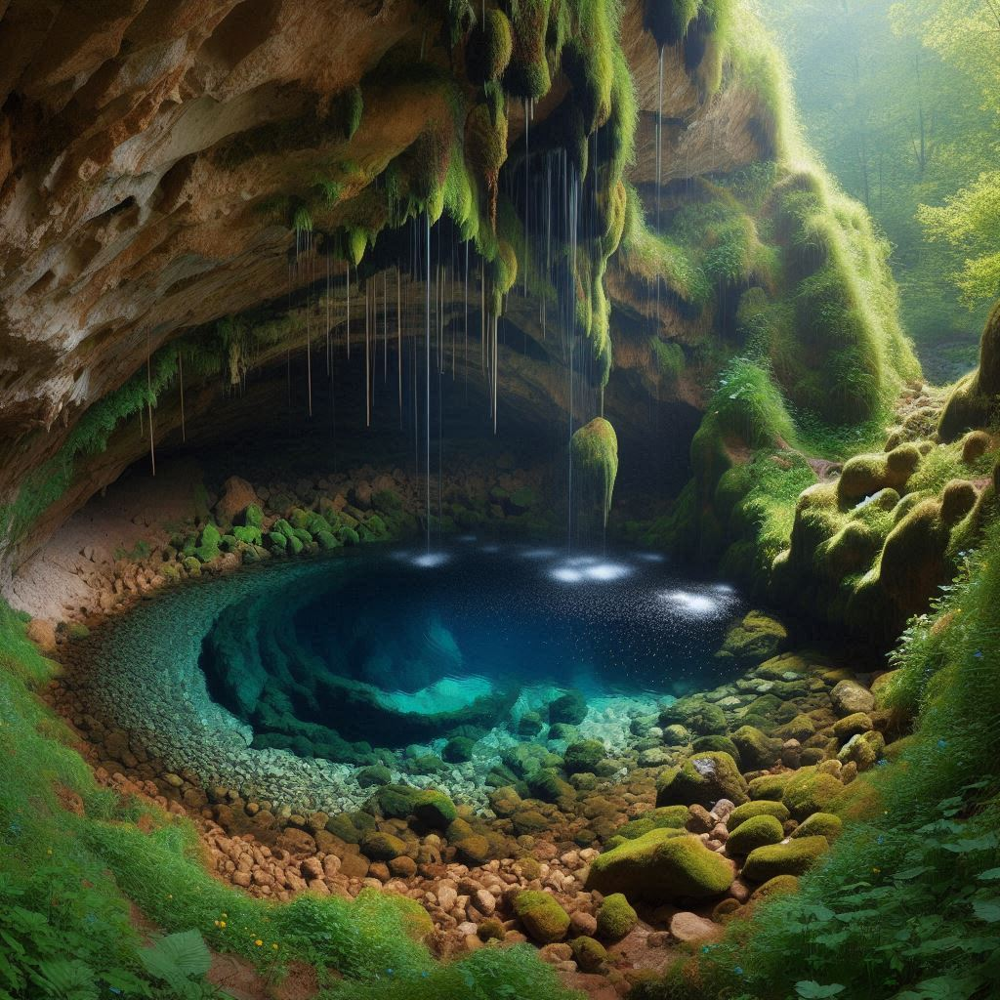
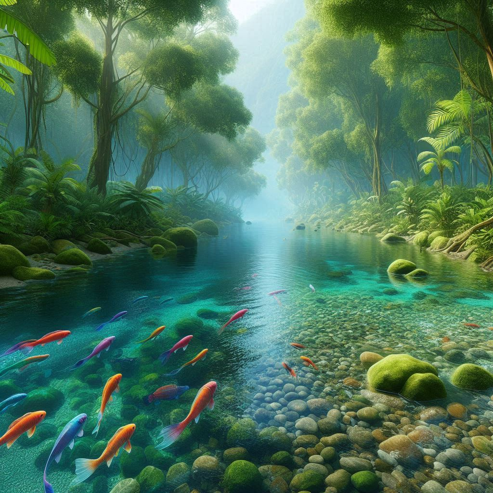
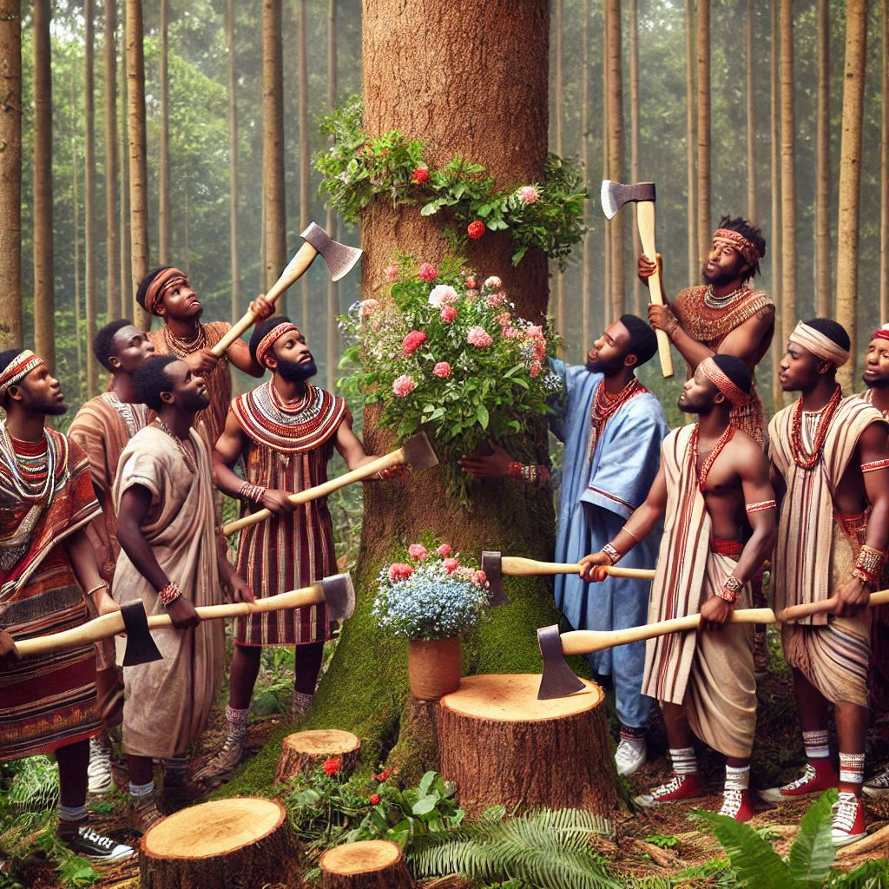
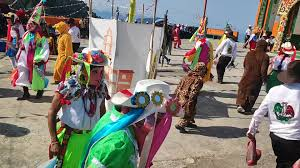

Cueva del manantial En Chicaxochitla, Atacpan, Zacapoaxtla, Puebla, se encontraba una cueva, en un manantial el cual hoy en día es parte de la red de agua potable local.se dice que cada 24 de junio, la cueva se abría mágicamente, permitiendo a los habitantes ver la cueva. Sin embargo, después de los desastres naturales, la entrada a la cueva quedó sellada y el manantial al pasar los años paso a incorporarse a la red de agua potable  Lo que el agua se llevo (diluvio) El 4 de octubre de 1999, una tormenta tropical devastadora azotó la Sierra Norte de Puebla, causando un diluvio que duró tres días. Las intensas lluvias provocaron deslizamientos de tierra y desbordamientos de ríos, que a su vez bloquearon varias carreteras y destruyeron infraestructuras. La tragedia dejó un saldo de al menos 256 personas fallecidas y miles de familias sin hogar. La comunidad se unió en un esfuerzo de solidaridad para ayudar a los damnificados, pero la región tardó años en recuperarse de las pérdidas económicas y humanas. Este evento es recordado como uno de los desastres naturales más graves en la historia de la región. En Atacpan lo que paso fue el cierre de varias carreteras y caminos debido a las altas cantidades de agua que circulaban en la zona, lo cual causo una grande pérdida económica y agrícola, el diluvio también se llevó una parte del cementerio el arrastrando los cuerpos de los difuntos, encontrado varias partes en zonas más debajo de la localidad de Atacpan El rio La comunidad se reunía a orillas de estos ríos, que reflejaban el cielo azul y ofrecían un lugar de paz y tranquilidad. Los niños jugaban en las aguas frescas mientras los ancianos contaban historias sobre tiempos antiguos, llenos de leyendas y tradiciones. Los agricultores dependían del agua pura para irrigar sus cultivos, y los ríos eran un símbolo de vida y prosperidad. A medida que los años pasaron, Atacpan comenzó a cambiar. La modernización dejó una huella en el medio ambiente. Los ríos que una vez fluyeron con pureza empezaron a menguar, afectados por la sobreexplotación de recursos. las nuevas generaciones oían hablar de los tiempos en los que los ríos eran grandes y limpios. Hoy, los habitantes de Atacpan buscan maneras de revitalizar y preservar el poco que queda de sus recursos naturales.  Creacion de palo de voladores Hace 20 años en el pueblo de atacpan iban a iban a buscar al monte un palo o un árbol el más derechito que estuviera que pidiera aproximadamente 25 a 30 m. Este palo iba a ser utilizado para que se colocara en el atrio de la iglesia y la danza de los voladores lo utilizara en la fiesta patronal Posteriormente ya aproximadamente el 20 de septiembre se presentaba se convocaba a reunión para a los pobladores de la comunidad para ir a cortar el árbol Como el árbol era traído desde el cerro entonces todos los ciudadanos varones asistían a ir a traerlo en ese entonces aún no se ocupaban los camiones ya que ya que si lo transportaban por medio de camiones se dañaba el palo y no podía llegar dañado por lo que todas las personas se encargaban de cargarlo hasta llegar al atrio de la iglesia en el atrio de la iglesia previamente ya habían cavado el hoyo donde sería enterrado ya para enterrarlo ya participaron la danza de los voladores y ya para ya sean su ritual para meter el guajolote vivo Se tenía que colocar flores en Cruz incensaron y colocar todos los ingredientes para preparar un mole los danzantes hacían un ritual para que pudieran enterrarlo esto se hacía antes de colocar el palo una vez ya hecho el ritual se procedía a ingresar el palo con ayuda de las personas los ciudadanos hacían cargadores de madera para apoyarse y hacer atados de hilo para poder ir alzándolo hasta lograr incorporarlo en el hoyo una vez colocado el palo se coloca en el palo se colocan flores de cruz en la parte baja y en medio esto lo hacen los danzantes una vez culminada la faena las mujeres del pueblo se encargaban de realizar el itacate para alimentar a todas las personas que habían asistido a la faena para c para ir a traer el palo y colocarlo  significado de la danza de los patrianos El pájaro carpintero lleva el grano del maíz en su pico a pueblo y los agricultores descubren que es comida, pero la ardilla se roba la costeña de los campesinos, entonces los campesinos comienzan a cazarlos y salen con sus perritos para cazar la ardilla y terminar con el daño a sus cultivos, cuando lo cazan hacen una celebración y es por ello se representa la danza, Los danzantes; son los campesinos; el payaso el cazador; representan a los perritos en niños. Primero sube el pájaro carpintero, en el palo donde danzan las personas después sube la ardilla y la Cazan, dónde el perro lo atrapa, es representada la caza con el payaso es el cazador y las personas danzan alrededor de un palo donde van a cazar la ardilla 